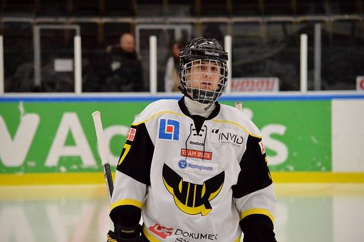
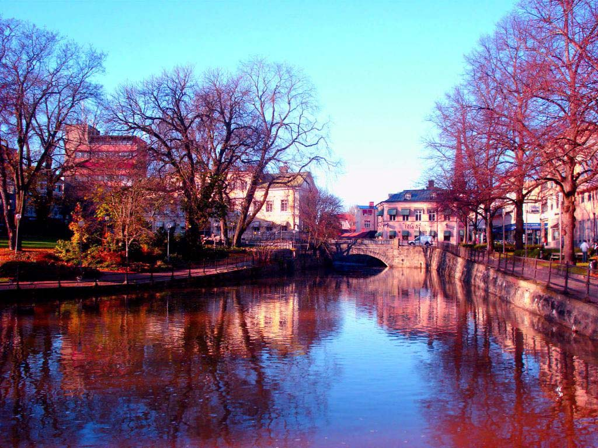

My picture of my first game
I have spent two years in Sweden.For a first time I lived in a new apartment without my parents and sister.I was very upset because I was just 16 years old and I never wash my clothes or never cooked before. I did very well on the games and after first season I was drafted to KHL in second round and I was expecting to be drafted in the 5th round to the NHL, but I was satisfied and stopped working. I made a lot of mistakes again and again. After all the problems our general manager sent me to the worst possible place in the world.Next stop Finland.

Picture of city where I lived